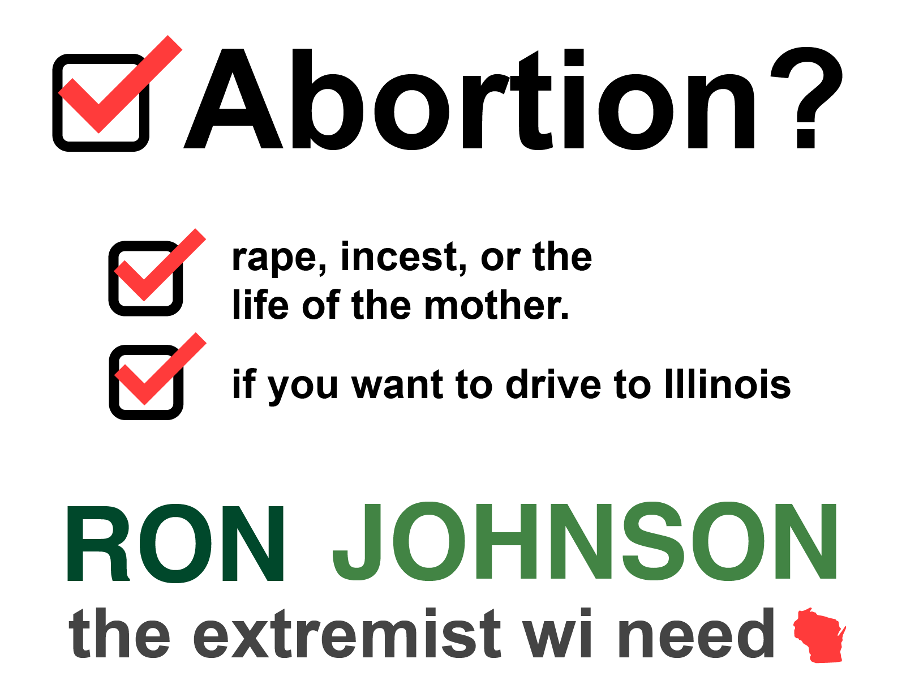

Abortion
Sept 11, 2022 by RJ
Abortion has no place in Wisconsin. Although women may want the
right to choose, so do the unborn persons-- but we can't ask them
can we?
BUT If you want to an abortion, you should just drive to Illinois,
just like Kyle Rittenhouse did! If you want to cross the border to
commit murder, be my guest!
Contraception is a SIN
August 22, 2022 by RJ
The Bible is CLEAR about contraception: it is against it. Only God
should decide who gets pregnant (and remains pregnant). And no one
should get to choose how they don't get pregnant. So no one should
have legal access to any contraception of any kind.
Anyone who says I am open to contraception does not understand my
steadfast belief in the bible.
Gen. 38:7-10
(7) And Her, the firstborn of Juda, was wicked in the sight of
the Lord: and was slain by him. (8) Juda therefore said to Onan
his son: Go in to thy brother's wife and marry her, that thou
mayst raise seed to thy brother. (9) He, knowing that the
children should not be his, when he went in to his brother's
wife, spilled his seed upon the ground,6 lest children should be
born in his brother's name. (10) And therefore the Lord slew
him, because he did a detestable thing.
That is one of my favorite lines from the Good Book. Masturbation
is an abomination according to the bible, and it should be against
the law. Any other form is contraception should also be against
the law.
As long as I am a senator, I will stand up for what is right and
biblical and lawful.
Pain and Personhood
July 4, 2022 by RJ

I recently introduced a bill that would prevent abortion when a
fetus is able to feel pain, because no person should be aborted
when they can feel pain.
I believe God gave us religion so we can understand God better:
Psalm 7:11-13
God is a righteous judge, And a God who has indignation every
day. If a man does not repent, He will sharpen His sword; He has
bent His bow and made it ready. He has also prepared for Himself
deadly weapons; He makes His arrows fiery shafts.
I believe God gave us religion so we can save sinners. That's why
I start the Joseph Project with Pastor Jerome Smith of Greater
Praise Church of God in Christ, an initiative that connects folks
with good jobs and is truly turning sinners's lives around.
Here in Wisconsin, we have plenty of sinners that need help. Many
of my teachers and pastors are sinners. And they need my help. I
take the lesson from Psalms and hope they repent just like I did.